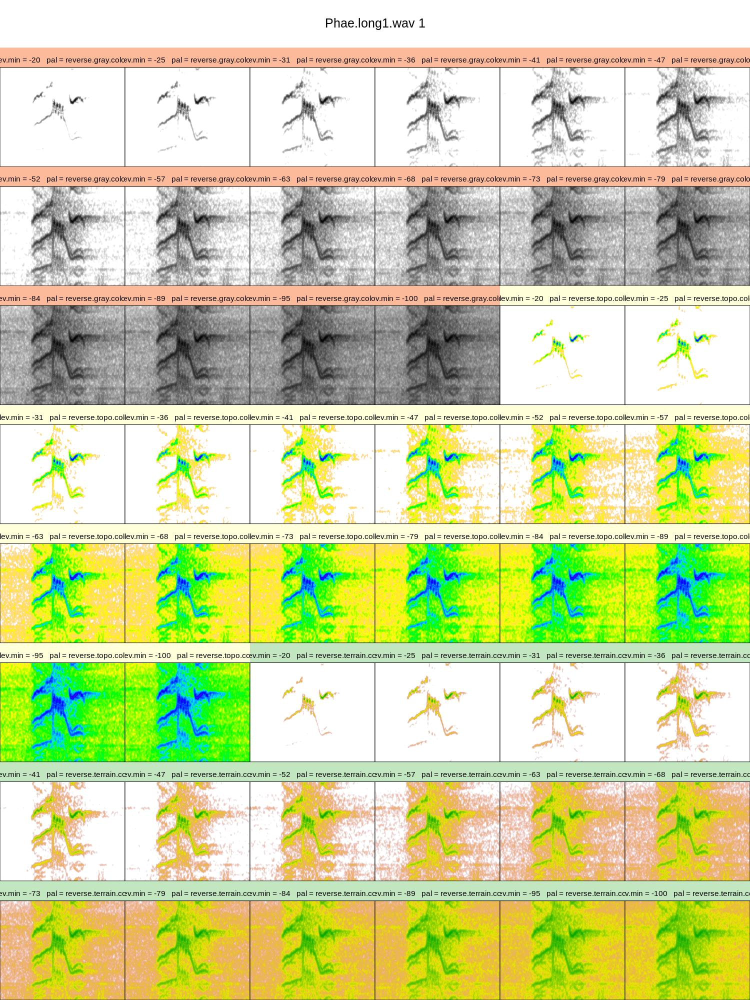

Quality checks for recordings and annotations
Objetive
- Provide tools for double-checking the quality of the acoustic data and derived analyses along the acoustic analysis workflow
When working with sound files obtained from various sources it is common to have variation in recording formats and parameters or even find corrupt files. Similarly, when a large number of annotations are used, it is normal to find errors in some of them. These problems may prevent the use of acoustic analysis in warbleR. Luckily, the package also offers functions to facilitate the detection and correction of errors in sound files and annotations.
1 Convert .mp3 to .wav
The mp32wav() function allows you to convert files in ‘.mp3’ format to ‘.wav’ format. This function converts all the ‘mp3’ files in the working directory. Let’s use the files in the ‘./examples/mp3’ folder as an example:
[1] "BlackCappedVireo.mp3" "BowheadWhaleSong.mp3" "CanyonWren.mp3" [1] "BlackCappedVireo.mp3" "BlackCappedVireo.wav" "BowheadWhaleSong.mp3"
[4] "BowheadWhaleSong.wav" "CanyonWren.mp3" "CanyonWren.wav"
We can also modify the sampling rate and/or dynamic range with mp32wav():
We can check the properties of the ‘.wav’ sound files using the info_sound_files() function:
| sound.files | duration | sample.rate | channels | bits | wav.size | samples |
|---|---|---|---|---|---|---|
| BlackCappedVireo.mp3 | 5.459592 | 22.05 | 1 | 16 | 0.087770 | 120384 |
| BlackCappedVireo.wav | 5.459592 | 22.05 | 1 | 16 | 0.240812 | 120384 |
| BowheadWhaleSong.mp3 | 86.648163 | 22.05 | 1 | 16 | 1.386787 | 1910592 |
| BowheadWhaleSong.wav | 86.648163 | 22.05 | 1 | 16 | 3.821228 | 1910592 |
| CanyonWren.mp3 | 5.433469 | 44.10 | 1 | 16 | 0.087352 | 239616 |
| CanyonWren.wav | 5.433469 | 44.10 | 1 | 16 | 0.479276 | 239616 |
2 Homogenize recordings
Alternatively, we can use the fix_wavs() function to homogenize the sampling rate, the dynamic interval and the number of channels. It is adviced that all sound files should have the same recording parameters before any acoustic analysis. In the example ‘.mp3’ files, not all of them have been recorded with the same parameters. We can see this if we convert them back to ‘.wav’ and see their properties:
| sound.files | duration | sample.rate | channels | bits | wav.size | samples |
|---|---|---|---|---|---|---|
| BlackCappedVireo.mp3 | 5.459592 | 22.05 | 1 | 16 | 0.087770 | 120384 |
| BlackCappedVireo.wav | 5.459592 | 22.05 | 1 | 16 | 0.240812 | 120384 |
| BowheadWhaleSong.mp3 | 86.648163 | 22.05 | 1 | 16 | 1.386787 | 1910592 |
| BowheadWhaleSong.wav | 86.648163 | 22.05 | 1 | 16 | 3.821228 | 1910592 |
| CanyonWren.mp3 | 5.433469 | 44.10 | 1 | 16 | 0.087352 | 239616 |
| CanyonWren.wav | 5.433469 | 44.10 | 1 | 16 | 0.479276 | 239616 |
The fix_wavs() function will convert all files to the same sampling rate and dynamic range:
| sound.files | duration | sample.rate | channels | bits | wav.size | samples |
|---|---|---|---|---|---|---|
| BlackCappedVireo.mp3 | 5.459592 | 22.05 | 1 | 16 | 0.087770 | 120384 |
| BlackCappedVireo.wav | 5.459592 | 22.05 | 1 | 16 | 0.240812 | 120384 |
| BowheadWhaleSong.mp3 | 86.648163 | 22.05 | 1 | 16 | 1.386787 | 1910592 |
| BowheadWhaleSong.wav | 86.648163 | 22.05 | 1 | 16 | 3.821228 | 1910592 |
| CanyonWren.mp3 | 5.433469 | 44.10 | 1 | 16 | 0.087352 | 239616 |
| CanyonWren.wav | 5.433469 | 44.10 | 1 | 16 | 0.479276 | 239616 |
Another useful function to check file properties is wav_dur(). This function returns the duration in seconds of each ‘.wav’ file.
3 Check recordings
check_sound_files() should be the first function that should be used before running any warbleR analysis. The function simply checks if the sound files in ‘.wav’ format in the working directory can be read in R. For example, the following code checks all the files in the ‘examples’ folder, which should detect the ‘corrupted_file.wav’:
All files can be readNot all sound files have the same sampling rate (potentially problematic, particularly for cross_correlation())
4 Spectrograph settings
The parameters that determine the appearance of spectrograms (and power spectra and periodgrams) also have an effect on the measurements taken on them. Therefore it is necessary to use the same parameters to analyze all the signals in a project (except with some exceptions) so that the measurements are comparable. The visualization of spectrograms generated with different spectrographic parameters is a useful way of defining the combination of parameters with which the structure of the signals is distinguished in more detail. The function tweak_spectro() aims to simplify the selection of parameters through the display of spectrograms. The function plots, for a single selection, a mosaic of spectrograms with different display parameters. For numerical arguments, the upper and lower limits of a range can be provided. The following parameters may have variable values:
- wl: window length (numerical range)
- ovlp: overlap (numerical range)
- collev.min: minimum amplitude value for color levels (numerical range)
- wn: window function name (character)
- pal: palette (character)
The following code generates an image with spectrograms that vary in window size and window function (the rest of the parameters are passed to the catalog () function internally to create the mosaic):

Note that the length.out argument defines the number of values to interpolate within the numerical ranges. wl = 220 seems to produce clearer spectrograms.
We can add a color palette to differentiate the levels of one of the parameters, for example ‘wn’:
Code
# install.packages('RColorBrewer')
library(RColorBrewer)
# crear paleta
cmc <- function(n) if (n > 5) rep(adjustcolor(brewer.pal(5, "Spectral"),
alpha.f = 0.6), ceiling(n/4))[1:n] else adjustcolor(brewer.pal(n,
"Spectral"), alpha.f = 0.6)
tweak_spectro(X = lbh_selec_table, wl = c(100, 1000), wn = c("hanning",
"hamming", "rectangle"), length.out = 16, nrow = 8, ncol = 6,
width = 15, height = 20, rm.axes = TRUE, cex = 1, box = F, group.tag = "wn",
tag.pal = list(cmc))
We can also use it to choose the color palette and the minimum amplitude for plotting (‘collev.min’):

5 Double-check selections
The main function to double-check selection tables is check_sels(). This function checks a large number of possible errors in the selection information:
- ‘X’ is an object of the class ‘data.frame’ or ‘selection_table’ (see selection_table) and contains the columns required to be used in any warbleR function (‘sound.files’, ‘selec’, ‘start’ , ‘end’, if it does not return an error)
- ‘sound.files’ in ‘X’ corresponds to the .wav files in the working directory or in the provided ‘path’ (if no file is found it returns an error, if some files are not found it returns error information in the output data frame)
- the time limit parameters (‘start’, ‘end’) and frequency (‘bottom.freq’, ‘top.freq’, if provided) are numeric and do not contain NA (if they do not return an error)
- There are no duplicate selection tags (‘selec’) within a sound file (if it does not return an error)
- sound files can be read (error information in the output data frame)
- The start and end time of the selections is within the duration of the sound files (error information in the output data frame)
- Sound files can be read (error information in the output data frame)
- The header (header) of the sound files is not damaged (only if the header = TRUE, error information in the selection table with results)
- ‘top.freq’ is less than half of the sampling frequency (nyquist frequency, error information in the data table with results)
- Negative values are not found in the time or frequency limit parameters (error information in the data table with results)
- ‘start’ higher than ‘end’ or ‘bottom.freq’ higher than ‘top.freq’ (error information in the output data frame)
- The value of ‘channel’ is not greater than the number of channels in the sound files (error information in the output data frame)
The function returns a data frame that includes the information in ‘X’ plus additional columns about the format of the sound files, as well as the result of the checks (column ‘check.res’):
| sound.files | channel | selec | start | end | bottom.freq | top.freq | check.res | duration | min.n.samples | sample.rate | channels | bits | sound.file.samples |
|---|---|---|---|---|---|---|---|---|---|---|---|---|---|
| Phae.long1.wav | 1 | 1 | 1.1693549 | 1.3423884 | 2.220105 | 8.604378 | OK | 0.1730334 | 3893 | 22.5 | 1 | 16 | 56251 |
| Phae.long1.wav | 1 | 2 | 2.1584085 | 2.3214565 | 2.169437 | 8.807053 | OK | 0.1630480 | 3668 | 22.5 | 1 | 16 | 56251 |
| Phae.long1.wav | 1 | 3 | 0.3433366 | 0.5182553 | 2.218294 | 8.756604 | OK | 0.1749187 | 3935 | 22.5 | 1 | 16 | 56251 |
| Phae.long2.wav | 1 | 1 | 0.1595983 | 0.2921692 | 2.316862 | 8.822316 | OK | 0.1325709 | 2982 | 22.5 | 1 | 16 | 38251 |
| Phae.long2.wav | 1 | 2 | 1.4570585 | 1.5832087 | 2.284006 | 8.888027 | OK | 0.1261502 | 2838 | 22.5 | 1 | 16 | 38251 |
| Phae.long3.wav | 1 | 1 | 0.6265520 | 0.7577715 | 3.006834 | 8.822316 | OK | 0.1312195 | 2952 | 22.5 | 1 | 16 | 49500 |
| Phae.long3.wav | 1 | 2 | 1.9742132 | 2.1043921 | 2.776843 | 8.888027 | OK | 0.1301789 | 2929 | 22.5 | 1 | 16 | 49500 |
| Phae.long3.wav | 1 | 3 | 0.1233643 | 0.2545812 | 2.316862 | 9.315153 | OK | 0.1312170 | 2952 | 22.5 | 1 | 16 | 49500 |
| Phae.long4.wav | 1 | 1 | 1.5168116 | 1.6622365 | 2.513997 | 9.216586 | OK | 0.1454249 | 3272 | 22.5 | 1 | 16 | 72000 |
| Phae.long4.wav | 1 | 2 | 2.9326920 | 3.0768784 | 2.579708 | 10.235116 | OK | 0.1441864 | 3244 | 22.5 | 1 | 16 | 72000 |
| Phae.long4.wav | 1 | 3 | 0.1453977 | 0.2904966 | 2.579708 | 9.742279 | OK | 0.1450989 | 3264 | 22.5 | 1 | 16 | 72000 |
Let’s modified a selection table to see how the function works:
Code
# copiar las primeras 6 filas
st2 <- lbh_selec_table[1:6, ]
# hacer caracter
st2$sound.files <- as.character(st2$sound.files)
# cambiar nombre de archivo de sonido en sel 1
st2$sound.files[1] <- "aaa.wav"
# modificar fin en sel 3
st2$end[3] <- 100
# hacer top.freq igual q bottom freq en sel 3
st2$top.freq[3] <- st2$bottom.freq[3]
# modificar top freq en sel 5
st2$top.freq[5] <- 200
# modificar channes en sel 6
st2$channel[6] <- 3
# revisar
cs <- check_sels(st2)
cs[, c(1:7, 10)]| sound.files | channel | selec | start | end | bottom.freq | top.freq | min.n.samples |
|---|---|---|---|---|---|---|---|
| aaa.wav | 1 | 1 | 1.1693549 | 1.3423884 | 2.220105 | 8.604378 | NA |
| Phae.long1.wav | 1 | 2 | 2.1584085 | 2.3214565 | 2.169437 | 8.807053 | 3668 |
| Phae.long1.wav | 1 | 3 | 0.3433366 | 100.0000000 | 2.218294 | 2.218294 | 2242274 |
| Phae.long2.wav | 1 | 1 | 0.1595983 | 0.2921692 | 2.316862 | 8.822316 | 2982 |
| Phae.long2.wav | 1 | 2 | 1.4570585 | 1.5832087 | 2.284006 | 200.000000 | 2838 |
| Phae.long3.wav | 1 | 1 | 0.6265520 | 0.7577715 | 3.006834 | 8.822316 | 2952 |
check_sels() is used internally when creating selection tables and extended selection tables.
5.1 Visual inspection of spectrograms
Once the information in the selections has been verified, the next step is to ensure that the selections contain accurate information about the location of the signals of interest. This can be done by creating spectrograms of all selections. For this we have several options. The first is spectrograms() (previously called specreator()) which generates (by default) a spectrogram for each selection. We can run it on the sample data like this:
The images it produces are saved in the working directory and look like this:

Exercise
- Have the label shown on the selection display the data in the ‘sel.comment’ column of the sample selection box using the
sel.labelsargument
5.2 Full spectrograms
We can create spectrograms for the whole sound files using full_spectrograms(). If the X argument is not given, the function will create the spectrograms for all the files in the working directory. Otherwise, the function generates spectrograms for sound files in X and highlights selections with transparent rectangles similar to those ofspectrograms(). In this example we download a recording from a striped-throated hermit (Phaethornis striigularis) from Xeno-Canto:
Code
# load package with color palettes
library(viridis)
# create directory
dir.create("./examples/hermit")
# download sound file
phae.stri <- query_xc(qword = "nr:154074", download = TRUE, path = "./examples/hermit")
# Convert mp3 to wav format
mp32wav(path = "./examples/hermit/", pb = FALSE)
# plot full spec
full_spectrograms(sxrow = 1, rows = 10, pal = magma, wl = 200, flim = c(3,
10), collevels = seq(-140, 0, 5), path = "./examples/hermit/")
6 Catalogs
Catalogs allow you to inspect selections of many recordings in the same image and group them by categories. This makes it easier to verify the consistency of the categories. Many of the arguments are shared with tweak_spectro() (catalog() is used internally in tweak_spectro()). We can generate a catalog with color tags to identify selections from the same sound file as follows:
Code
# read bat inquiry data
inq <- readRDS(file = "ext_sel_tab_inquiry.RDS")
catalog(X = inq[1:100, ], flim = c(10, 50), nrow = 10, ncol = 10,
same.time.scale = T, mar = 0.01, gr = FALSE, img.suffix = "inquiry",
labels = c("sound.files", "selec"), legend = 0, rm.axes = TRUE,
box = F, group.tag = "sound.files", tag.pal = list(magma), width = 20,
height = 20, pal = viridis, collevels = seq(-100, 0, 5))
Exercise
- Using the ‘lbh_selec_table’ data, create a catalog with selections color-tagged by song type
7 Tailoring selections
The position of the selections in the sound file (i.e. its ‘coordinates’ of time and frequency) can be modified interactively from R using the sel_tailor() function. This function produces a graphic window showing spectrograms and a series of ‘buttons’ that allow you to modify the view and move forward in the selection table:

The function returns the corrected data as a data frame in R and also saves a ‘.csv’ file in the directory where the sound files are located.
sel_tailor() can also be used to modify frequency contours such as those produced by the dfDTW() or ffDTW() function:

8 References
- Araya-Salas M, Smith-Vidaurre G (2017) warbleR: An R package to streamline analysis of animal acoustic signals. Methods Ecol Evol 8:184–191.
Session information
R version 4.3.2 (2023-10-31)
Platform: x86_64-pc-linux-gnu (64-bit)
Running under: Ubuntu 22.04.2 LTS
Matrix products: default
BLAS: /usr/lib/x86_64-linux-gnu/blas/libblas.so.3.10.0
LAPACK: /usr/lib/x86_64-linux-gnu/lapack/liblapack.so.3.10.0
locale:
[1] LC_CTYPE=en_US.UTF-8 LC_NUMERIC=C
[3] LC_TIME=en_US.UTF-8 LC_COLLATE=en_US.UTF-8
[5] LC_MONETARY=en_US.UTF-8 LC_MESSAGES=en_US.UTF-8
[7] LC_PAPER=en_US.UTF-8 LC_NAME=C
[9] LC_ADDRESS=C LC_TELEPHONE=C
[11] LC_MEASUREMENT=en_US.UTF-8 LC_IDENTIFICATION=C
time zone: America/Costa_Rica
tzcode source: system (glibc)
attached base packages:
[1] stats graphics grDevices utils datasets methods base
other attached packages:
[1] kableExtra_1.3.4 warbleR_1.1.30 NatureSounds_1.0.4 knitr_1.46
[5] seewave_2.2.3 tuneR_1.4.6
loaded via a namespace (and not attached):
[1] jsonlite_1.8.8 compiler_4.3.2 rjson_0.2.21 brio_1.1.4
[5] webshot_0.5.5 Rcpp_1.0.12 xml2_1.3.6 stringr_1.5.1
[9] moments_0.14.1 bitops_1.0-7 parallel_4.3.2 signal_1.8-0
[13] systemfonts_1.0.5 scales_1.3.0 yaml_2.3.8 fastmap_1.1.1
[17] R6_2.5.1 dtw_1.23-1 htmlwidgets_1.6.4 MASS_7.3-55
[21] munsell_0.5.0 svglite_2.1.3 rlang_1.1.3 testthat_3.2.1
[25] stringi_1.8.3 xfun_0.43 fftw_1.0-8 viridisLite_0.4.2
[29] cli_3.6.2 withr_3.0.0 formatR_1.14 magrittr_2.0.3
[33] bioacoustics_0.2.8 digest_0.6.35 rvest_1.0.3 rstudioapi_0.15.0
[37] pbapply_1.7-2 lifecycle_1.0.4 vctrs_0.6.5 proxy_0.4-27
[41] evaluate_0.23 glue_1.7.0 RCurl_1.98-1.14 colorspace_2.1-0
[45] rmarkdown_2.26 httr_1.4.7 tools_4.3.2 htmltools_0.5.8.1